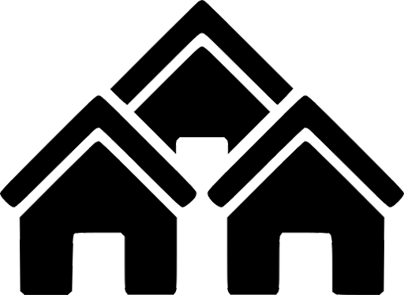

<!DOCTYPE html>
<html style="height: 100%; margin:0%;">
    <head>
        <title>Orbis Map</title>

        <meta content="text/html;charset=utf-8" http-equiv="Content-Type">
        <meta content="utf-8" http-equiv="encoding">

        <meta name="viewport" content="width=device-width, initial-scale=1.0">

        <link
            rel="stylesheet"
            href="https://unpkg.com/leaflet@1.6.0/dist/leaflet.css"
            integrity="sha512-xwE/Az9zrjBIphAcBb3F6JVqxf46+CDLwfLMHloNu6KEQCAWi6HcDUbeOfBIptF7tcCzusKFjFw2yuvEpDL9wQ=="
            crossorigin=""
          />

          <script
            src="https://unpkg.com/leaflet@1.6.0/dist/leaflet.js"
            integrity="sha512-gZwIG9x3wUXg2hdXF6+rVkLF/0Vi9U8D2Ntg4Ga5I5BZpVkVxlJWbSQtXPSiUTtC0TjtGOmxa1AJPuV0CPthew=="
            crossorigin=""
          ></script>
    </head>
    <body style="height: 100%; margin: 0%;">

          <div id="map" style="width: 100%; height: 100%; background: #888888; margin: 0%;"></div>

          <script type="text/javascript">
                // Variables
                var bounds = [[0,0], [6144, 8192]];
                var map = L.map('map', {
                    crs: L.CRS.Simple,
                    minZoom: -4,
                    maxZoom: 0,
                    noWrap: true
                });

                //var mapurl = 'https://github.com/SValv/Orbis/blob/master/Pictures/Maps/Orbis%20Aestea.jpg'; //sourcing from github doesnt seem to work
                var mapurl = 'Orbis%20Aestea.jpg';
                var image = L.imageOverlay(mapurl, bounds).addTo(map);
                map.fitBounds(bounds);


                //var southWest = map.unproject([0, 0], map.getMaxZoom());
                //var northEast = map.unproject([8192,  -6144], map.getMaxZoom());
                //map.setMaxBounds(new L.LatLngBounds(southWest, northEast));

                //map.setMaxBounds(map.getBounds());

                //map.setMaxBounds(new L.LatLngBounds(
                //  map.unproject([[0,0]], map.getMaxZoom()),
                //  map.unproject([8192, -6144], map.getMaxZoom())
                //));
                //map.setMaxBounds(new L.LatLngBounds([0,0], [6142, 8192]));

                // Markers and Popups

                // Helper Marker to find lat/lng of a given point with a draggable pointer
                var marker = L.marker([0,0], {
                  draggable: true,
                }).addTo(map); //comment out to hide helper
                marker.bindPopup('LatLng Marker').openPopup();
                marker.on('dragend', function(e) {
                  marker.getPopup().setContent('Clicked ' + marker.getLatLng().toString() + '<br />'
                  + 'Pixels ' + map.project(marker.getLatLng(), map.getMaxZoom().toString()))
                 .openOn(map);
                });

                var grayIcon = L.icon({
                  iconUrl: 'scripts/leaflet/images/marker_gray2.png',
                  iconSize:     [30, 30], // size of the icon
                  iconAnchor:   [15, 30], // point of the icon which will correspond to marker's location
                  popupAnchor:  [0, 0] // point from which the popup should open relative to the iconAnchor
                });
                //L.marker([0, 0], {icon: grayIcon}).addTo(map);

                var marker_eisland = L.marker(map.unproject([8029, -4492], map.getMaxZoom()), {icon: grayIcon})
                    .bindPopup('<b>Eisland: </b><a href="https://svalv.github.io/Orbis/das-eisland.html">Link</a>');

                var marker_skaen = L.marker(map.unproject([5966, -5707], map.getMaxZoom()), {icon: grayIcon})
                    .bindPopup('<b>Skaen: </b><a href="https://svalv.github.io/Orbis/Skaen.html">Link</a>');

                var marker_herzland = L.marker(map.unproject([7485, -2270], map.getMaxZoom()), {icon: grayIcon})
                    .bindPopup('<b>Herzland: </b><a href="https://svalv.github.io/Orbis/das-herzland.html">Link</a>');

                var marker_nors = L.marker(map.unproject([5072, -4158], map.getMaxZoom()), {icon: grayIcon})
                    .bindPopup('<b>Nors: </b><a href="https://svalv.github.io/Orbis/nors.html">Link</a>');

                var marker_yondalla = L.marker(map.unproject([8048, -692], map.getMaxZoom()), {icon: grayIcon})
                    .bindPopup('<b>Yondalla: </b><a href="https://svalv.github.io/Orbis/yondalla.html">Link</a>');

                var marker_eldria = L.marker(map.unproject([4006, -1128], map.getMaxZoom()), {icon: grayIcon})
                    .bindPopup('<b>Eldria: </b><a href="https://svalv.github.io/Orbis/die-region-eldria.html">Link</a>');

                var marker_himmelsspitzen = L.marker(map.unproject([3595, -4296], map.getMaxZoom()), {icon: grayIcon})
                    .bindPopup('<b>Das Himmelsspitzen Gebirge: </b><a href="https://svalv.github.io/Orbis/das-himmelsspitzen-gebirge.html">Link</a>');

                var marker_eisenroteWueste = L.marker(map.unproject([738, -563], map.getMaxZoom()), {icon: grayIcon})
                    .bindPopup('<b>Eisenrote Wueste: </b><a href="https://svalv.github.io/Orbis/EisenroteWueste.html">Link</a>');

                var marker_grau = L.marker(map.unproject([1572, -4956], map.getMaxZoom()), {icon: grayIcon})
                    .bindPopup('<b>Graue Ödnis: </b><a href="https://svalv.github.io/Orbis/die-graue-%C3%B6dnis.html">Link</a>');

                var marker_eid_rah_kari = L.marker(map.unproject([1488, -3465], map.getMaxZoom()), {icon: grayIcon})
                    .bindPopup('<b>Eid Rah kari: </b><a href="https://svalv.github.io/Orbis/eid-rah-kari.html">Link</a>');

                var marker_grenzland = L.marker(map.unproject([7288,  -146], map.getMaxZoom()), {icon: grayIcon})
                    .bindPopup('<b>Grenzland: </b><a href="https://svalv.github.io/Orbis/das-grenzland.html">Link</a>');

                var marker_silvanacia = L.marker(map.unproject([5809, -919], map.getMaxZoom()), {icon: grayIcon})
                    .bindPopup('<b>Silva Nacia: </b><a href="https://svalv.github.io/Orbis/RegionSilvaNacia.html">Link</a>');

                var polygon = L.polygon([
                    map.unproject([5809, -919], map.getMaxZoom()),
                    map.unproject([7288,  -146], map.getMaxZoom()),
                    map.unproject([7485, -2270], map.getMaxZoom()),
                    map.unproject([4428,  -3388], map.getMaxZoom())
                ], {color: 'green'});

                var circle = L.circle(map.unproject([2494, -2637], map.getMaxZoom()), {
                    color: 'red',
                    fillColor: '#f03',
                    fillOpacity: 0.2,
                    radius: 500
                });

                //Layer Groups
                var lg_area = L.layerGroup([marker_eisland,marker_skaen,marker_herzland,
                                            marker_nors,marker_yondalla,marker_eldria,
                                            marker_himmelsspitzen,marker_eisenroteWueste,
                                            marker_grau,marker_eid_rah_kari,
                                            marker_grenzland,marker_silvanacia]);
                var lg_language = L.layerGroup([circle]);
                var lg_religion = L.layerGroup([polygon]);

                var overlays = {
                  "Areas" : lg_area,
                  " Language" : lg_language,
                  "Religion":lg_religion//here I can add more layers,e.g. cities, persons,...
                }
                //Add layer control
                L.control.layers(null, overlays).addTo(map); //first is null as we dont have different basemaps
          </script>
    </body>
</html>
